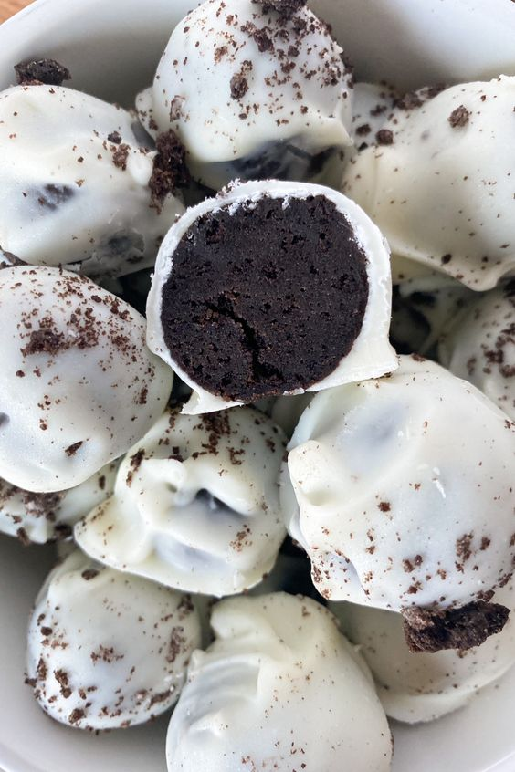

Oreo Balls

Description
Oreo balls may seem like an intimidating treat to make,
but they are not as difficult as they may look to be!
Ingredients
- 1 package of regular Oreos
- 8 oz softened cream cheese
- 14 to 16 oz almond bark or melting wafers
How to Make Oreo Balls
- Break Oreos in half and add to a food processor
to crush into a fine texture
- Mix crushed Oreos in a large bowl with the softened
cream cheese
- Use a tablespoon to scoop the Oreo mixture and roll into balls
- Place Oreo balls on to wax paper
- In a mixing bowl, melt half of the almond bark in the microwave
in 30 second increments until its completely melted.
- Stir in between increments
- Should take about 90 seconds
- Place one ball into the almond bark using a spoon and coat evenly
- Lift the Oreo ball out of the chocolate and allow the excess to run off
- Place Oreo ball on tin foil or wax paper
- Allow the chocolate to harden for about 10 minutes
How to Store Oreo Balls
- Airtight container at room temperature for up to 3 days
- Airtight container in the frigde for up to 2 weeks
- Gallon freezer bag in the freezer for up to 3 months